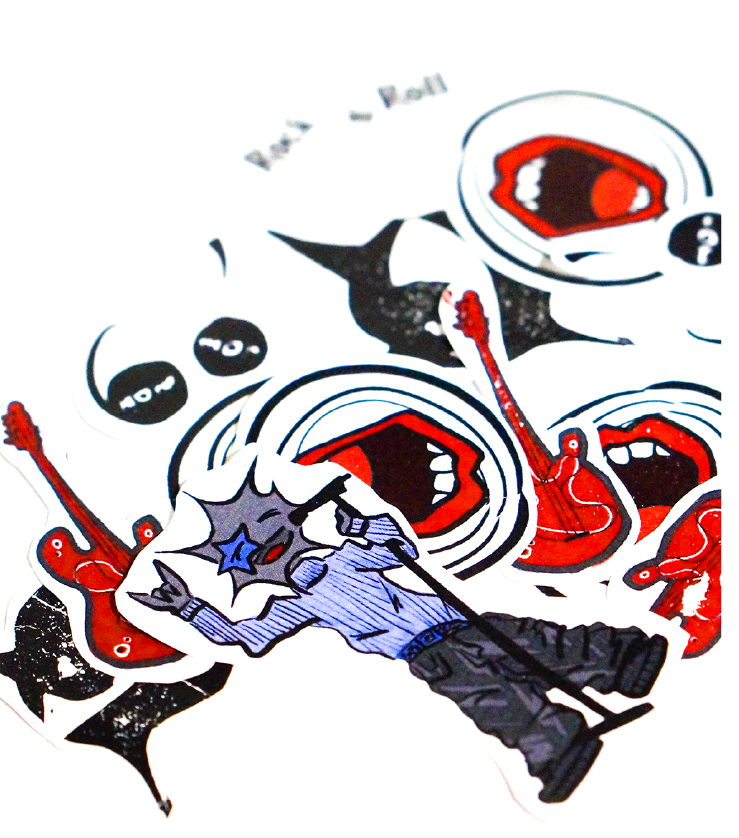

MC2S Fanzine
EDITION/ club - mise en page - risographie
[2024]
Issu d’un workshop avec Hadrien Herzog, il a été pour projet de créer un fanzine pour un club. Celui-ci est dédié à un club de musique se nommant "MC2S". Le but à été de concevoir un support graphique qui promouvoit ce club et ses idéaux.
Pour se faire, la risographie en moochromie a permis de jouer sur les trames, les valeurs de gris et de la superposition de formats. On retrouve 3 catégorie dans ce fanzine, le rock, la pop et le jazz. On explore alors tous ces styles à travers des anecdotes, des icônes ou encore des titres phares pour mettre tout le monde à la page!
